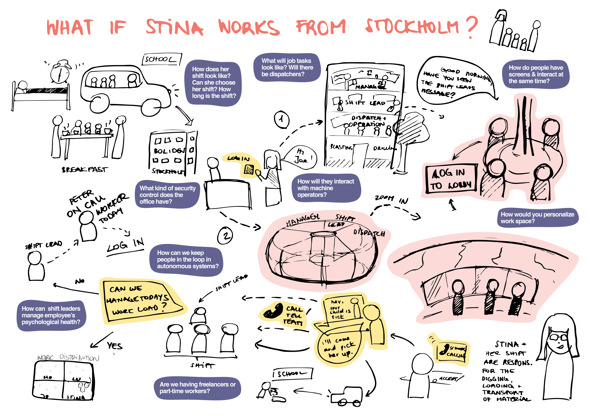
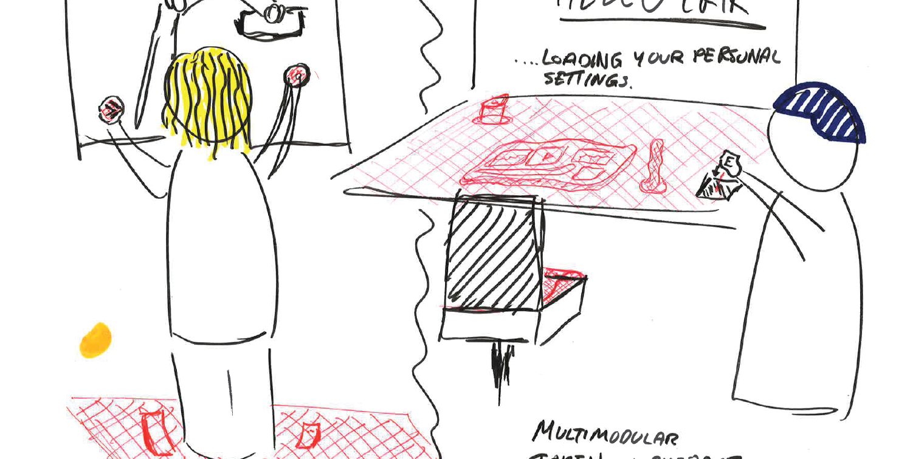
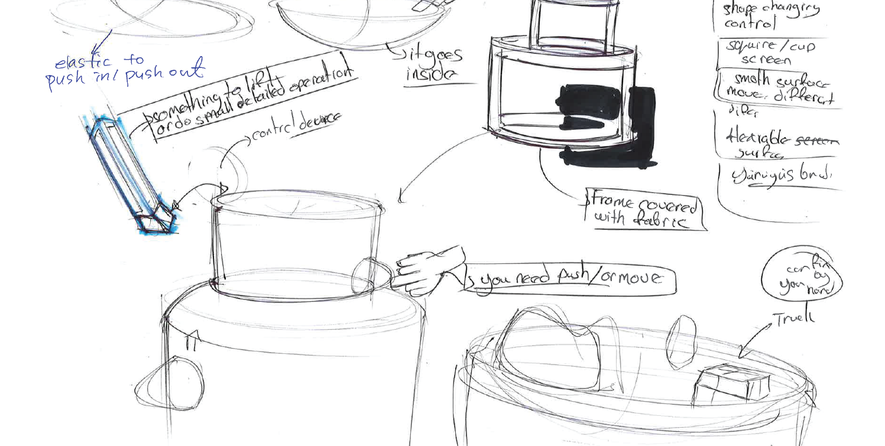
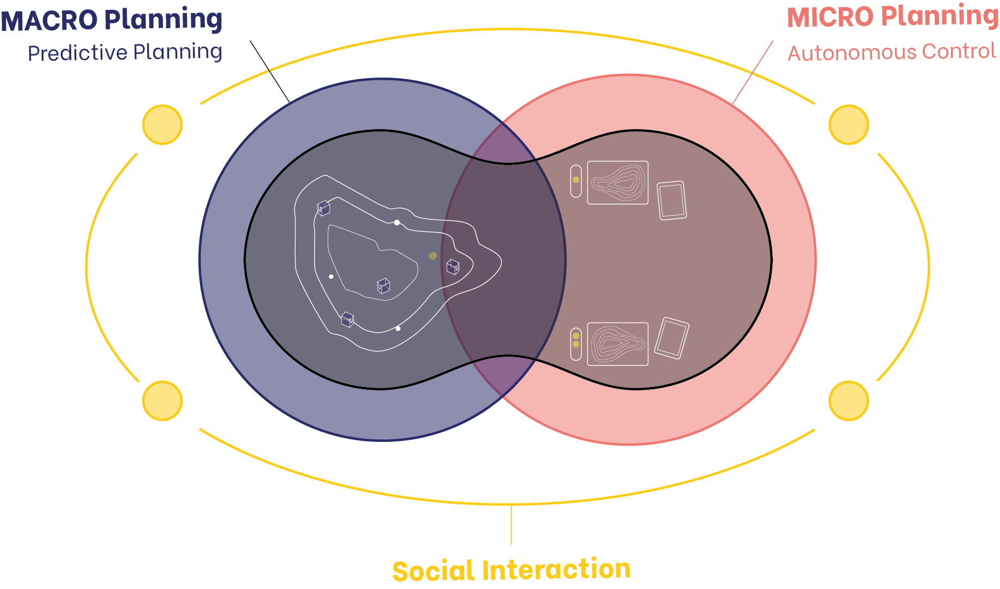
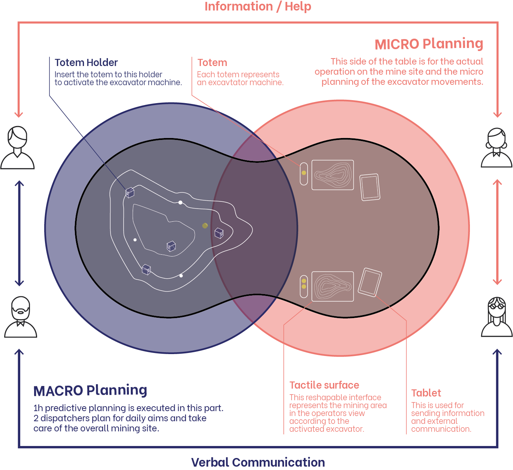
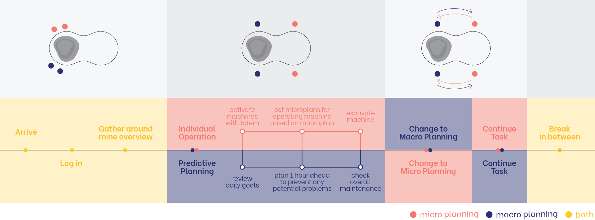

Group Project done for 10 weeks in fall of 2019 with Katharina Brunner, Emil Guldager and Mehmet Ozyoldas cooperation with Komatsu.
So Heum Hwang
about
playground
works
Comine
Comine is a mining table for 2030 that offers new ways of interaction and depth perception with 3D representation of the mine area. It also enhances emotional bond within the workplace by providing a platform for social interaction within the team.
User Research, Journey Mapping, Data Visualization, UX/UI Design, Video Motion Design
Research : D3.js | UI : Figma, Illustrator | Video : After Effects & Premiere Pro
How might we design a mining interface for 2030 that adapts technological developments of autonomous mining but still put human operator into center of attention?
Key Components
Every operator has a tablet used for tracking their individual process,
running excavators and receiving additional information about mining sites.
Every operator has a tablet used for tracking their individual process,
running excavators and receiving additional information about mining sites.
Macroplanners can take a look at the overview of the mining surface when setting macroplans. They can get access to location of autonomous trucks and excavators, people in charge of them and the excavating materials.
Mining surfaces are represented physically, where microplanners can touch and feel the surface to have a sense of depth perception and use their rock sense to feel the real mining surface. This is in control with Individual Working Tablet, setting microplans and seeing which materials they are excavating and when.
Mining surfaces are represented physically, where microplanners can touch and feel the surface to have a sense of depth perception and use their rock sense to feel the real mining surface. This is in control with Individual Working Tablet, setting microplans and seeing which materials they are excavating and when.
Microplanners are assigend to 2 to 3 excavator machines in one shift and these machines are activated by individual totems. By removing the round chip from the totem, microplanners can activate the tactile surface and the totem that is on top of macroplanning overview will represent the location it is being operated.
Design Opportunities
Design Process: Discover
In order to envision a new mining interface that will suggest a new solution both for machines and people, we took a human centered design method to develop a future scenario of working in the mining industry.
In collaboration with Komatsu Mining, we interviewed mining operators working in LKAB in Kiruna and Boliden in Gallivare. Along with field visits to Oryx Studio and meeting a Boliden designer, we gathered real experience stories that lead us to different insights regarding how remote mining will look like in 2030.

After our research trip, we came back to Umea to analyze and digest all the information. We visualized our research insights through various maps either it was physical, visual or digital. We tried to be in the shoes of a excavator to understand their daily routines.

conducting an interview in Aitik mines in Gallivare

digesting research materials back in Umea
testing out a remote mining operator in Oryx Studio
conducting an interview in Aitik mines in Gallivare
digesting research materials back in Umea
testing out a remote mining operator in Oryx Studio
Experience Mapping & Task Analysis
First of all, based on the interviews we had with mine operators, we drew an experience journey map to visualize their daily journey and a task analysis diagram to analyze operator’s different tasks.

In order to grasp a better understanding of how a machine operator works, we built a physical mockup of a machine operator. By trying out different buttons by sitting at an actual excavator, we were able to understand how a excavator works and concentration levels that an operator need for control.

As we were working as partners with Komatsu, we also had to understand generally how the entire ecosystem of a mining site works. By mapping out the relationship between different stakeholders, we realized how different roles have different level of responsibilities.
I tried out visualizing this stakeholder’s map into a data visualization code by using a library called d3 in javascript.
Design Process: Define
The future of mining wasn’t only about autonomous technology, it was more related to preventing technology taking over people. Machine operators had a strong affection and bond towards each other and towards their work place. Mine wasn’t a cold and contact-less space like we imagined, it was rather a warm place full of human interaction.
"The machine operator is my woman! Come inside to my operating room, I'll show you my house."
Peter_Boliden operator

“I don’t want to work remotely since I'm nostalgic about going down to the mines with my colleagues.”
Richard_former LKAB operator

"Due to our postures when working, we try to work out regularly. And we often tend to do it with our colleagues."
Stina_Boliden operator
With this discovery in mind, we imagined how a future mining workplace will look like.
What would happen if Stinna and Peter works remotely in Stockholm? Will they be working in an individual working space at home? What will the shifts look like? Will they have the same responsibilities?


Design Process: Develop
Our team went through a general brainstorming session to first gather all the ideas. With having all sorts of ideas, we categorized them into different themes in order to sort out the top 3 areas we want to focus on.
We wanted to focus on mainly 3 themes: keeping a lively working environment, implementing tangible solutions to promote rock sense, and developing a different perception of depth and distance while operating. Based on these themes, we followed a brainstorming technique called “3 ideas in 5 minutes”, where we had to specify each idea that we had to the next step by taking turns.




TACTILE SENSATION

After this session, we finalized our idea with having a one big operation table, with having 2 different parts: a macro planning part and a micro planning part. In terms of future technology, we wanted to implement not only autonomous control, but also predictive planning technology.
We tried to emphasize the social interaction that operators have with each other. At the same time, we tried to find the best way to minimize the difference of a excavator machine and a remote control machine, by representing depth perceptions in different ways.

Once we specified our idea, we prototyped with various shapes and methods to show the mining environment. This exercise allowed us to manage how remote control causes confusion with depth perception for operators. We had to find the best way to simulate “rock sense”, which ended up combining visual perception and tangibility to represent the mining surface.
We used different vibration methods such as Arduino servos and Little Bits, and different types of surface representation such as fabric, sticks, or even LED lights.


After numerous tryouts in model making and a brainstorming session with moodboards, we decided to make an interactive mining table that is made in fabric. Fabric and a circular curve shape was used to encourage social interaction and deliver a warm feeling among operators.
Also, we decided to have a rectangular shape as a default mining area for operators, which provided the most accurate representation of the site without any distortions.
Design Process: Deliver
Tactile Sensation
Teachers are shown as characters on the screen to interact in real time with children
Social Interaction
4 curriculum that are considered to be beneficial for children’s early brain development
Level of Abstraction
Detailed feedback in order to ensure 100% trust between parents and teachers

Each microplanners and macroplanners exchange information and ask for help to each other at the same table through verbal communication.
Macroplanners take their individual totem that represents each excavator machine and plans for one hour in advance. This plan is then delivered to microplanners who operates excavators remotely.
Excavators are operated autonomously, which only gives microplanners to plan each micro step and monitor their movement. A tactile surface represents the mining environment, minimizing the difference in representing actual mine sites and the represented interface

